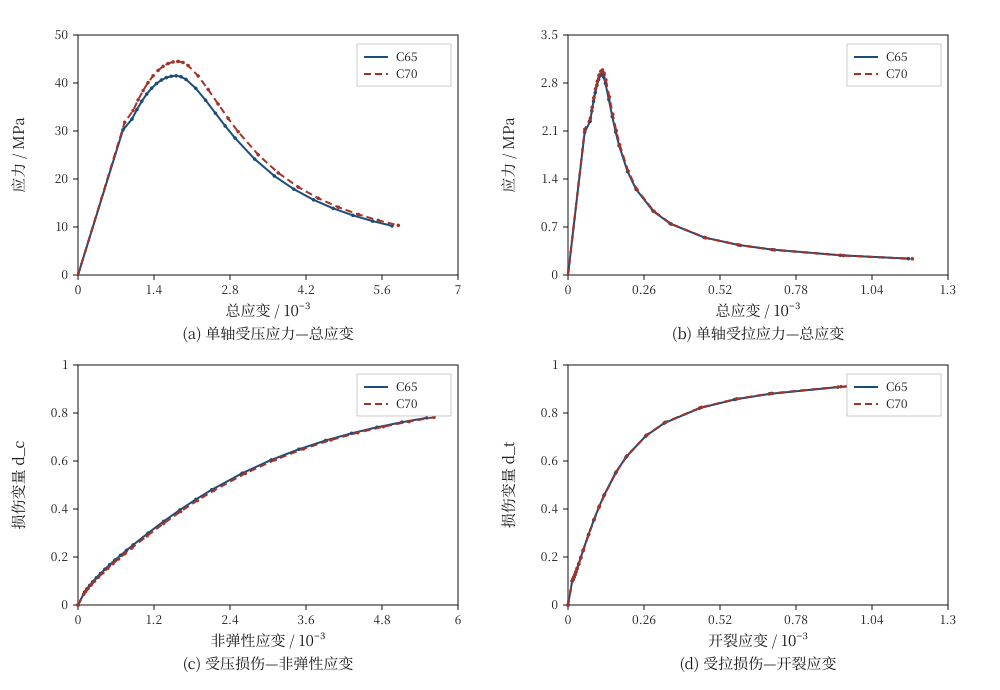

第二章 · 参考文献与本文图件逐项对照
左侧为作者/期刊原文指定页的在线预览（外站可能拒绝嵌入，保留原页入口）；右侧为归档输入图、独立方法示意、解析诊断或未计算标记。非同一对象，不冒充试验验证。
文献：张田等（2024），计算力学学报41(6):1130–1137，DOI 10.7511/jslx20230913003；Li等（2020），IOP 794:012036，CC BY 3.0；Tan等（2025），Engineering Structures 336:120443，作者接受稿。Tan所述实际构造含环缝环氧树脂，不应把0.5误称为本塔干接缝实测值。
01 单轴本构与损伤曲线
参考文献｜Li等2020 §3 / 张田等2024 第1132页
本文｜现有证据或待验证项目

已归档实际输入100点；文献采用不同损伤/正则化方法，不是同一材料试验。
02 CDP参数求解流程
参考文献｜张田等2024 图1
本文｜现有证据或待验证项目
方法流程已绘；原生验证及断裂能校准尚未完成。
03 应变分解
参考文献｜Li等2020 图2、图3
本文｜现有证据或待验证项目
由REV22两种材料的受压峰值数值计算，不是循环试验。
04 单轴试件、网格及边界
参考文献｜张田等2024 图2、图4
本文｜现有证据或待验证项目
拟议100mm同尺寸立方体；网格1³、2³、4³。输入生成器已提交，未执行Data Check。
05 理论曲线与求解输出
参考文献｜张田等2024 图5
本文｜现有证据或待验证项目
尚无可核验结果
待提取试件S、E及反力
待提取试件S、E及反力
理论输入已有，未叠加虚构ODB。
06 循环滞回
参考文献｜张田等2024 图5
本文｜现有证据或待验证项目
尚无可核验结果
滞回曲线需真实循环求解
滞回曲线需真实循环求解
位移历史是诊断输入，不是试验或滞回结果。
07 断裂能与网格敏感性
参考文献｜张田等2024 图3
本文｜现有证据或待验证项目
按现有拉伸开裂应变表梯形积分至截断点，乘单元特征长度；仅表面积诊断，非实测断裂能、非网格收敛结果。
08 黏性参数敏感性
参考文献｜张田等2024 第1132页 §3.2
本文｜现有证据或待验证项目
尚无可核验结果
μ=0、10⁻⁶、10⁻⁵、10⁻⁴ s；生成器包含该组输入，待提取S、损伤、ALLVD及收敛记录
μ=0、10⁻⁶、10⁻⁵、10⁻⁴ s；生成器包含该组输入，待提取S、损伤、ALLVD及收敛记录
文献讨论正则化，不具有与本研究完全相同的敏感性图。
09 普通钢筋及预应力筋本构
参考文献｜张田等2024 图7
本文｜现有证据或待验证项目
尚无可核验结果
当前REV22完整钢材卡尚未可靠取得；不得以参考值冒充实际曲线
当前REV22完整钢材卡尚未可靠取得；不得以参考值冒充实际曲线
需核对钢筋牌号、塑性曲线及PT材料的实际关键字。
10 接缝局部有限元模型
参考文献｜Tan等2025 图12
本文｜现有证据或待验证项目


右为既有钢法兰及锚固方法试件，不是水平混凝土环缝；独立环缝待建/验证。
11 接缝开合、压力及滑移
参考文献｜Tan等2025 图11
本文｜现有证据或待验证项目
尚无可核验结果
COPEN、CPRESS、CSLIP、接触面网格；当前无可核验REV22 ODB
COPEN、CPRESS、CSLIP、接触面网格；当前无可核验REV22 ODB
不可用其他模型的接触压力替代本模型云图。
12 摩擦系数敏感性
参考文献｜Tan等2025 §4.2、图13
本文｜现有证据或待验证项目
纯库仑归一化解析上限；0.3、0.5、0.7为拟议数值工况，不是有限元敏感性结果。Tan论文没有此三组对照图。
13 预压力与接缝承载
参考文献｜Tan等2025 图16、17
本文｜现有证据或待验证项目
全压紧、无粘结、均匀压力、纯扭及μ=0.5的归一化解析上限；未考虑开裂、滑移转折或钢筋屈服，非本塔承载力结果。